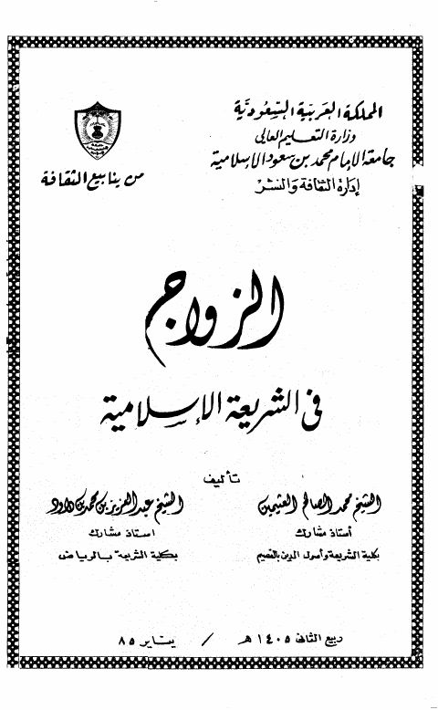
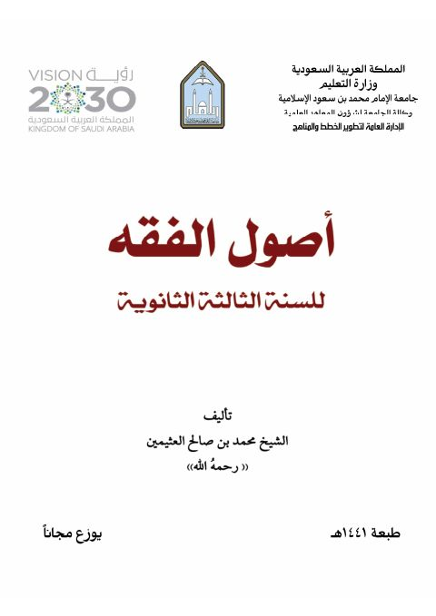
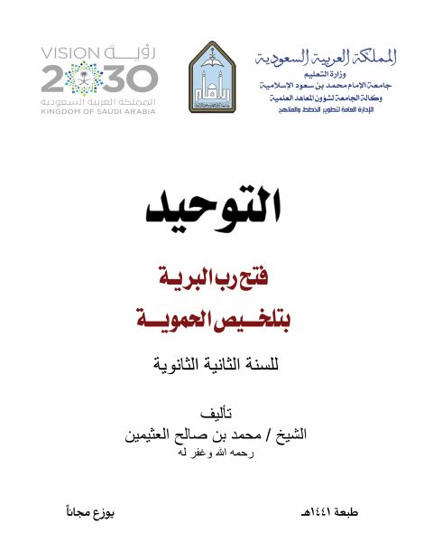
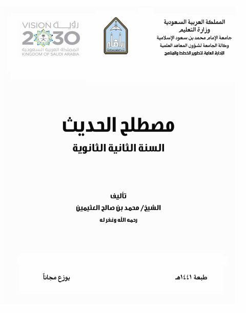

جامعة الإمام محمد بن سعود الإسلامية
Publisher
Resources
 كتاب تعريف أهل التقديس بمراتب الموصوفين بالتدليس
كتاب تعريف أهل التقديس بمراتب الموصوفين بالتدليس
أحمد بن علي بن حجر العسقلاني
كتاب تعريف أهل التقديس بمراتب الموصوفين بالتدليس
كتاب تعريف أهل التقديس بمراتب الموصوفين بالتدليس
أحمد بن علي بن حجر العسقلاني
 الحديث الضعيف وحكم الاحتجاج به
الحديث الضعيف وحكم الاحتجاج به
عبد الكريم عبد الله الخضير
الحديث الضعيف وحكم الاحتجاج به
الحديث الضعيف وحكم الاحتجاج به
عبد الكريم عبد الله الخضير

الزواج في الشريعة الإسلامية الزواج في الشريعة الإسلامية محمد الصالح العثيمين • عبد العزيز بن محمد داوود
أصول الفقه للسنة الثالثة الثانوية أصول الفقه للسنة الثالثة الثانوية محمد بن صالح العثيمين
التوحيد، فتح رب البرية بتلخيص الحموية للسنة الثانية الثانوية التوحيد، فتح رب البرية بتلخيص الحموية للسنة الثانية الثانوية محمد بن صالح العثيمين
مصطلح الحديث للسنة الثانية الثانوية مصطلح الحديث للسنة الثانية الثانوية محمد بن صالح العثيمين